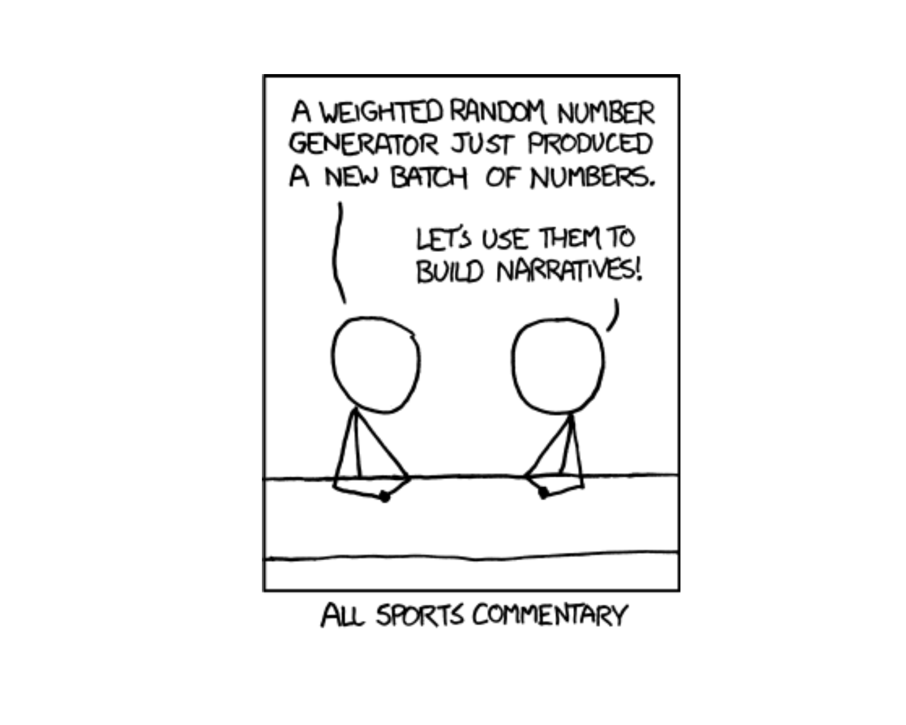
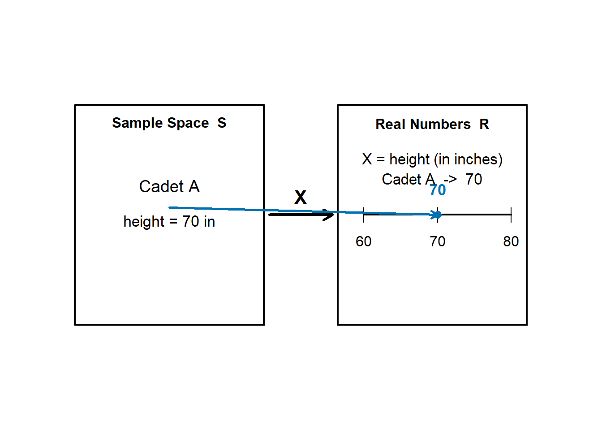
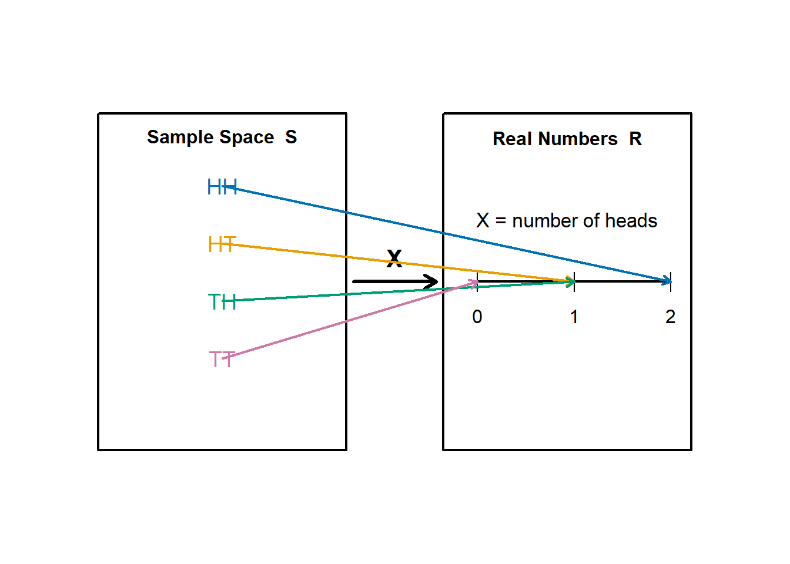
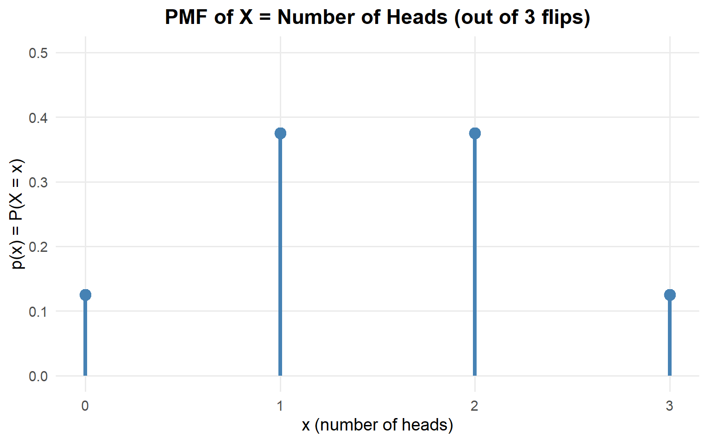
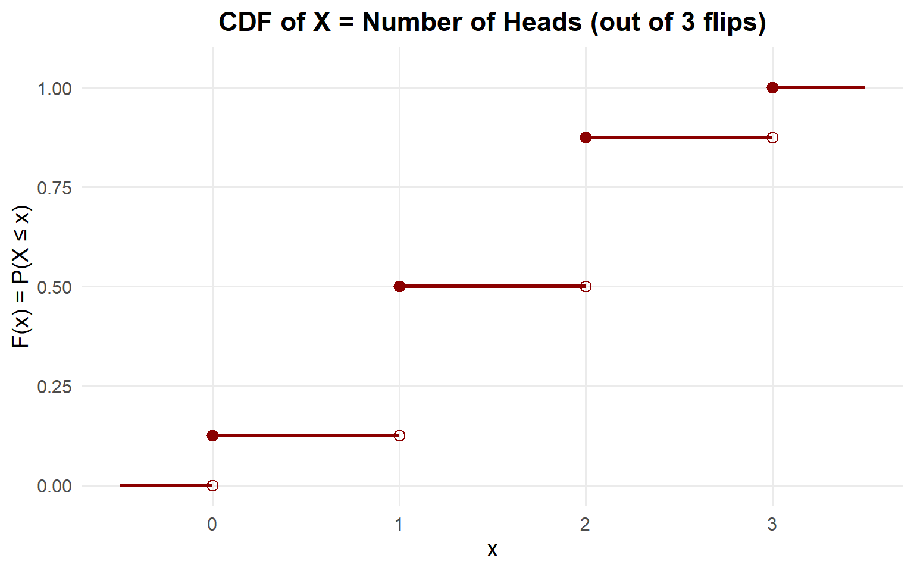

Lesson 9: Discrete Random Variables

What We Did: Lessons 6, 7 & 8
Quick Review: Probability Basics (Lesson 6)
NoteKey Concepts from Lesson 6
Sample Spaces and Events:
- Sample space \(S\) = set of all possible outcomes
- Event = subset of the sample space
- Operations: Union (\(A \cup B\)), Intersection (\(A \cap B\)), Complement (\(A^c\))
Kolmogorov Axioms:
- \(P(A) \geq 0\)
- \(P(S) = 1\)
- For mutually exclusive events: \(P(A \cup B) = P(A) + P(B)\)
Key Rules:
- Complement Rule: \(P(A^c) = 1 - P(A)\)
- Addition Rule: \(P(A \cup B) = P(A) + P(B) - P(A \cap B)\)
Quick Review: Conditional Probability (Lesson 7)
NoteKey Concepts from Lesson 7
Conditional Probability: \[P(A \mid B) = \frac{P(A \cap B)}{P(B)}\]
Multiplication Rule: \[P(A \cap B) = P(A) \cdot P(B \mid A) = P(B) \cdot P(A \mid B)\]
Law of Total Probability: \[P(A) = P(B) \cdot P(A \mid B) + P(B^c) \cdot P(A \mid B^c)\]
Bayes’ Theorem: \[P(B \mid A) = \frac{P(B) \cdot P(A \mid B)}{P(B) \cdot P(A \mid B) + P(B^c) \cdot P(A \mid B^c)}\]
Quick Review: Counting & Independence (Lesson 8)
NoteKey Concepts from Lesson 8
Multiplication Principle: If an experiment has stages with \(n_1, n_2, \ldots, n_k\) outcomes, the total outcomes are \(n_1 \times n_2 \times \cdots \times n_k\).
Counting Formulas:
| With Replacement | Without Replacement | |
|---|---|---|
| Ordered | \(n^k\) | \(P(n,k) = \frac{n!}{(n-k)!}\) |
| Unordered | \(\binom{n+k-1}{k}\) | \(\binom{n}{k} = \frac{n!}{k!(n-k)!}\) |
Independence:
- \(A\) and \(B\) are independent if \(P(A \cap B) = P(A) \cdot P(B)\)
- Equivalently: \(P(A \mid B) = P(A)\)
- Independent \(\neq\) Mutually Exclusive!
What We’re Doing: Lesson 9
Objectives
- Understand how PMFs are created and used in discrete random variables
- Understand how CDFs are used in discrete random variables
- Understand and calculate Expected Value and Variance
Required Reading
Devore, Sections 3.1, 3.2, 3.3
Break!
Have you seen this?
Review: Rendering & Turning In Your EDA
ImportantVantage
Let’s go to Vantage and walk through how to render and turn in your Exploratory Data Analysis assignment.
What is a Random Variable?
In probability, we often care about numerical summaries of random experiments rather than the outcomes themselves.
ImportantDefinition: Random Variable
A random variable is a function that assigns a numerical value to each outcome in a sample space.
\[ X: S \rightarrow \mathbb{R} \]
We use capital letters (\(X\), \(Y\), \(Z\)) for random variables and lowercase letters (\(x\), \(y\), \(z\)) for their specific values.
A random variable is simply a rule for turning outcomes into numbers.
Example 1
Select a cadet at random and let \(X = \text{height (in inches) of the selected cadet}.\)
If the cadet is 70 inches tall, then
\[ 70 \rightarrow 70. \]

Example 2
Toss two coins with outcomes \(HH, HT, TH, TT\). Define \(X = \text{number of heads}.\)
Then
- \(TT \rightarrow 0\)
- \(TH \rightarrow 1\)
- \(HT \rightarrow 1\)
- \(HH \rightarrow 2\)
In this case, the random variable explicitly converts symbolic outcomes into numbers.

Discrete vs. Continuous Random Variables
Random variables come in two types:
NoteTypes of Random Variables
Discrete Random Variable:
- Takes on a finite or countably infinite number of distinct values
- Examples: Number of cadets absent, number of hits on target, count of defective items
Continuous Random Variable:
- Takes on any value in an interval (uncountably infinite)
- Examples: Time to complete a task, weight, distance, temperature
WarningToday’s Focus
Today we focus exclusively on discrete random variables.
We’ll cover continuous random variables in Lesson 12.
Our Running Example
Throughout this lesson, we’ll use one example to build everything:
NoteExample: Coin Flips
A cadet flips a fair coin 3 times.
Let \(X\) = number of heads (out of 3 flips).
What values can \(X\) take? \(X \in \{0, 1, 2, 3\}\)
We’ll use this example to teach the rest of the material for today.
Probability Mass Function (PMF)
Mathematical Definition
ImportantDefinition: Probability Mass Function
The probability mass function (PMF) of a discrete random variable \(X\) is:
\[p(x) = P(X = x)\]
which gives the probability that \(X\) takes the value \(x\).
Properties:
- \(p(x) \geq 0\) for all \(x\)
- \(\sum_{\text{all } x} p(x) = 1\)
PMF for Our Coin Flip Example
NoteHow did we build this PMF?
Or as a formula: \(p(x) = \frac{\binom{3}{x}}{2^3}, \quad x \in \{0, 1, 2, 3\}\)
Setup: 3 coin flips, each equally likely to be H or T.
Total outcomes (ordered, with replacement): \(n^k = 2^3 = 8\) equally likely outcomes: \(\{HHH, HHT, HTH, HTT, THH, THT, TTH, TTT\}\)
Since all outcomes are equally likely, we use:
\[P(X = x) = \frac{\text{number of outcomes with } x \text{ heads}}{\text{total outcomes}} = \frac{\binom{3}{x}}{n^k} = \frac{\binom{3}{x}}{2^3}\]
- Numerator: Unordered without replacement → \(\binom{3}{x}\) (choosing which flips are heads)
- Denominator: Ordered with replacement → \(n^k = 2^3 = 8\) (each of 3 flips has 2 options)
Calculations:
- \(P(X = 0) = \frac{\binom{3}{0}}{8} = \frac{1}{8}\) (just TTT)
- \(P(X = 1) = \frac{\binom{3}{1}}{8} = \frac{3}{8}\) (HTT, THT, TTH)
- \(P(X = 2) = \frac{\binom{3}{2}}{8} = \frac{3}{8}\) (HHT, HTH, THH)
- \(P(X = 3) = \frac{\binom{3}{3}}{8} = \frac{1}{8}\) (just HHH)
Verify: All \(p(x) \geq 0\) ✓ and \(\sum p(x) = \frac{1+3+3+1}{8} = 1\) ✓
This uses counting! The numerator counts favorable outcomes, the denominator is the total number of equally likely outcomes.
Tabular
| \(x\) | 0 | 1 | 2 | 3 |
|---|---|---|---|---|
| \(p(x)\) | \(\frac{1}{8}\) | \(\frac{3}{8}\) | \(\frac{3}{8}\) | \(\frac{1}{8}\) |
PMF: Graphical Form

Note: For discrete RVs, we use spikes (not bars) to emphasize that probability exists only at specific points.
Formula
\[ p(X = x) = \begin{cases} \frac{1}{8} & x = 0 \\[6pt] \frac{3}{8} & x = 1 \\[6pt] \frac{3}{8} & x = 2 \\[6pt] \frac{1}{8} & x = 3 \\[6pt] 0 & \text{otherwise} \end{cases} \]
Probability Questions: Using the PMF
Now let’s use our PMF to answer some questions:
NoteQ1: What is the probability of getting 2 or fewer heads?
\[ \begin{aligned} P(X \leq 2) &= P(X = 0) + P(X = 1) + P(X = 2) \\[6pt] &= \frac{1}{8} + \frac{3}{8} + \frac{3}{8} \\[6pt] &= \frac{7}{8} \end{aligned} \]
NoteQ2: What is the probability of getting fewer than 2 heads?
\[ \begin{aligned} P(X < 2) &= P(X = 0) + P(X = 1) \\[6pt] &= \frac{1}{8} + \frac{3}{8} \\[6pt] &= \frac{1}{2} \end{aligned} \]
NoteQ3: What is the probability of getting exactly 2 heads?
\[P(X = 2) = \frac{3}{8}\]
NoteQ4: What is the probability of getting more than 2 heads?
\[P(X > 2) = P(X = 3) = \frac{1}{8}\]
NoteQ5: What is the probability of getting 2 or more heads?
\[ \begin{aligned} P(X \geq 2) &= P(X = 2) + P(X = 3) \\[6pt] &= \frac{3}{8} + \frac{1}{8} \\[6pt] &= \frac{1}{2} \end{aligned} \]
NoteQ6: What is the probability of getting between 1 and 3 heads?
\[ \begin{aligned} P(1 < X < 3) &= P(X = 2) \\[6pt] &= \frac{3}{8} \end{aligned} \]
Cumulative Distribution Function (CDF)
Mathematical Definition
ImportantDefinition: Cumulative Distribution Function
The cumulative distribution function (CDF) of a random variable \(X\) is:
\[F(x) = P(X \leq x)\]
For a discrete RV, this is computed by summing the PMF:
\[F(x) = \sum_{y \leq x} p(y)\]
Key idea: The CDF accumulates (adds up) probabilities from the smallest value up to \(x\).
Going from PMF to CDF
To build the CDF from the PMF, we accumulate probabilities:
\[F(x) = \sum_{y \leq x} p(y)\]
For our example:
\[ p(X = x) = \begin{cases} \frac{1}{8} & x = 0 \\[6pt] \frac{3}{8} & x = 1 \\[6pt] \frac{3}{8} & x = 2 \\[6pt] \frac{1}{8} & x = 3 \\[6pt] 0 & \text{otherwise} \end{cases} \]
- \(F(0) = P(X \leq 0) = p(0) = \frac{1}{8}\)
- \(F(1) = P(X \leq 1) = p(0) + p(1) = \frac{1}{8} + \frac{3}{8} = \frac{4}{8} = \frac{1}{2}\)
- \(F(2) = P(X \leq 2) = p(0) + p(1) + p(2) = \frac{1}{2} + \frac{3}{8} = \frac{7}{8}\)
- \(F(3) = P(X \leq 3) = p(0) + p(1) + p(2) + p(3) = \frac{7}{8} + \frac{1}{8} = 1\)
CDF: Tabular Form
| \(x\) | 0 | 1 | 2 | 3 |
|---|---|---|---|---|
| \(p(x)\) | \(\frac{1}{8}\) | \(\frac{3}{8}\) | \(\frac{3}{8}\) | \(\frac{1}{8}\) |
| \(F(x)\) | \(\frac{1}{8}\) | \(\frac{1}{2}\) | \(\frac{7}{8}\) | \(1\) |
CDF: Graphical Form

Note: The CDF of a discrete RV is a step function — it jumps at each possible value of \(X\).
CDF: Formula
\[ F(x) = \begin{cases} 0 & x < 0 \\[6pt] \frac{1}{8} & 0 \leq x < 1 \\[6pt] \frac{1}{2} & 1 \leq x < 2 \\[6pt] \frac{7}{8} & 2 \leq x < 3 \\[6pt] 1 & x \geq 3 \end{cases} \]
Probability Questions: Using the CDF
The CDF is useful for computing probabilities over ranges:
NoteQ1: What is the probability of getting 2 or fewer heads?
\[ \begin{aligned} P(X \leq 2) &= F(2) \\[6pt] &= \frac{7}{8} \end{aligned} \]
NoteQ2: What is the probability of getting fewer than 2 heads?
\[ \begin{aligned} P(X < 2) &= P(X \leq 1) \\[6pt] &= F(1) \\[6pt] &= \frac{1}{2} \end{aligned} \]
NoteQ3: What is the probability of getting exactly 2 heads?
\[ \begin{aligned} P(X = 2) &= F(2) - F(1) \\[6pt] &= \frac{7}{8} - \frac{1}{2} \\[6pt] &= \frac{3}{8} \end{aligned} \]
NoteQ4: What is the probability of getting more than 2 heads?
\[ \begin{aligned} P(X > 2) &= 1 - P(X \leq 2) \\[6pt] &= 1 - F(2) \\[6pt] &= 1 - \frac{7}{8} \\[6pt] &= \frac{1}{8} \end{aligned} \]
NoteQ5: What is the probability of getting 2 or more heads?
\[ \begin{aligned} P(X \geq 2) &= 1 - P(X < 2) \\[6pt] &= 1 - P(X \leq 1) \\[6pt] &= 1 - F(1) \\[6pt] &= 1 - \frac{1}{2} \\[6pt] &= \frac{1}{2} \end{aligned} \]
NoteQ6: What is the probability of getting between 1 and 3 heads?
\[ \begin{aligned} P(1 < X < 3) &= F(2) - F(1) \\[6pt] &= \frac{7}{8} - \frac{1}{2} \\[6pt] &= \frac{3}{8} \end{aligned} \]
Expected Value
What if we wanted to know the ‘expected’ number of heads in our coin flip example?
Mathematical Definition
ImportantDefinition: Expected Value
The expected value (or mean) of a discrete random variable \(X\) is:
\[E(X) = \mu = \sum_{\text{all } x} x \cdot p(x)\]
Interpretation: The expected value is the long-run average — if you repeated the experiment many times, the average value of \(X\) would approach \(E(X)\).
WarningImportant Note
The expected value is NOT necessarily a value that \(X\) can actually take!
Expected Value: Our Example
\[E(X) = \sum_{x=0}^{3} x \cdot p(x)\]
\[= 0 \cdot \frac{1}{8} + 1 \cdot \frac{3}{8} + 2 \cdot \frac{3}{8} + 3 \cdot \frac{1}{8}\]
\[= 0 + \frac{3}{8} + \frac{6}{8} + \frac{3}{8} = \frac{12}{8} = 1.5\]
Interpretation: On average, you will get 1.5 heads out of 3 flips. Over many repetitions of this experiment, the average number of heads will approach 1.5.
Note: 1.5 is not a possible value of \(X\) (you can’t flip 1.5 heads), but it’s still a meaningful measure of center.
Variance and Standard Deviation
What if we wanted to know how much the number of heads varies between experiments from the expected value in our coin flip example?
Mathematical Definition
ImportantDefinition: Variance
The variance of a discrete random variable \(X\) is:
\[Var(X) = \sigma^2 = E[(X - \mu)^2] = \sum_{\text{all } x} (x - \mu)^2 \cdot p(x)\]
Shortcut formula: \[Var(X) = E(X^2) - [E(X)]^2\]
ImportantDefinition: Standard Deviation
The standard deviation is:
\[SD(X) = \sigma = \sqrt{Var(X)}\]
Interpretation: Variance and SD measure how spread out the distribution is around the mean.
Variance: Our Example
Method 1: Using the Definition
\[Var(X) = \sum_{\text{all } x} (x - \mu)^2 \cdot p(x)\]
| \(x\) | 0 | 1 | 2 | 3 |
|---|---|---|---|---|
| \(p(x)\) | \(\frac{1}{8}\) | \(\frac{3}{8}\) | \(\frac{3}{8}\) | \(\frac{1}{8}\) |
With \(\mu = 1.5\):
\[ \begin{aligned} Var(X) &= (0 - 1.5)^2 \cdot \frac{1}{8} + (1 - 1.5)^2 \cdot \frac{3}{8} + (2 - 1.5)^2 \cdot \frac{3}{8} + (3 - 1.5)^2 \cdot \frac{1}{8} \\[6pt] &= (2.25) \cdot \frac{1}{8} + (0.25) \cdot \frac{3}{8} + (0.25) \cdot \frac{3}{8} + (2.25) \cdot \frac{1}{8} \\[6pt] &= \frac{2.25}{8} + \frac{0.75}{8} + \frac{0.75}{8} + \frac{2.25}{8} \\[6pt] &= \frac{6}{8} = 0.75 \end{aligned} \]
Method 2: Using the Shortcut Formula
\[Var(X) = E(X^2) - [E(X)]^2\]
Step 1: Find \(E(X^2)\)
\[ \begin{aligned} E(X^2) &= \sum_{x=0}^{3} x^2 \cdot p(x) \\[6pt] &= 0^2 \cdot \frac{1}{8} + 1^2 \cdot \frac{3}{8} + 2^2 \cdot \frac{3}{8} + 3^2 \cdot \frac{1}{8} \\[6pt] &= 0 + \frac{3}{8} + \frac{12}{8} + \frac{9}{8} = \frac{24}{8} = 3 \end{aligned} \]
Step 2: Apply the shortcut formula
\[Var(X) = E(X^2) - [E(X)]^2 = 3 - (1.5)^2 = 3 - 2.25 = 0.75\]
Standard Deviation
\[SD(X) = \sqrt{Var(X)} = \sqrt{0.75} \approx 0.866\]
Interpretation: The number of heads typically varies by about 0.87 from the average of 1.5.
Summary: Our Running Example
NoteComplete Analysis: 3 Fair Coin Flips
PMF:
\[ p(x) = \begin{cases} \frac{1}{8} & x = 0 \\[6pt] \frac{3}{8} & x = 1 \\[6pt] \frac{3}{8} & x = 2 \\[6pt] \frac{1}{8} & x = 3 \\[6pt] 0 & \text{otherwise} \end{cases} \]
CDF:
\[ F(x) = \begin{cases} 0 & x < 0 \\[6pt] \frac{1}{8} & 0 \leq x < 1 \\[6pt] \frac{1}{2} & 1 \leq x < 2 \\[6pt] \frac{7}{8} & 2 \leq x < 3 \\[6pt] 1 & x \geq 3 \end{cases} \]
Summary Statistics:
- \(E(X) = 1.5\) heads
- \(Var(X) = 0.75\)
- \(SD(X) \approx 0.866\) heads
Board Problem: Rolling a Fair Die
A cadet rolls a fair six-sided die. Let \(X\) = the number showing on the top face.
Part A: Build the PMF
NoteA1: What values can X take?
\(X \in \{1, 2, 3, 4, 5, 6\}\)
NoteA2: Find the PMF in tabular form
| \(x\) | 1 | 2 | 3 | 4 | 5 | 6 |
|---|---|---|---|---|---|---|
| \(p(x)\) | \(\frac{1}{6}\) | \(\frac{1}{6}\) | \(\frac{1}{6}\) | \(\frac{1}{6}\) | \(\frac{1}{6}\) | \(\frac{1}{6}\) |
NoteA3: Write the PMF as a formula
\[ p(x) = \begin{cases} \frac{1}{6} & x \in \{1, 2, 3, 4, 5, 6\} \\[6pt] 0 & \text{otherwise} \end{cases} \]
NoteA4: Sketch the PMF

Part B: Build the CDF
NoteB1: Find the CDF in tabular form
| \(x\) | 1 | 2 | 3 | 4 | 5 | 6 |
|---|---|---|---|---|---|---|
| \(F(x)\) | \(\frac{1}{6}\) | \(\frac{2}{6}\) | \(\frac{3}{6}\) | \(\frac{4}{6}\) | \(\frac{5}{6}\) | \(1\) |
NoteB2: Write the CDF as a formula
\[ F(x) = \begin{cases} 0 & x < 1 \\[6pt] \frac{1}{6} & 1 \leq x < 2 \\[6pt] \frac{2}{6} & 2 \leq x < 3 \\[6pt] \frac{3}{6} & 3 \leq x < 4 \\[6pt] \frac{4}{6} & 4 \leq x < 5 \\[6pt] \frac{5}{6} & 5 \leq x < 6 \\[6pt] 1 & x \geq 6 \end{cases} \]
NoteB3: Sketch the CDF

Part C: Probability Questions Using the PMF
NoteC1: What is the probability of rolling 4 or fewer?
\[ \begin{aligned} P(X \leq 4) &= P(X = 1) + P(X = 2) + P(X = 3) + P(X = 4) \\[6pt] &= \frac{1}{6} + \frac{1}{6} + \frac{1}{6} + \frac{1}{6} \\[6pt] &= \frac{4}{6} = \frac{2}{3} \end{aligned} \]
NoteC2: What is the probability of rolling fewer than 4?
\[ \begin{aligned} P(X < 4) &= P(X = 1) + P(X = 2) + P(X = 3) \\[6pt] &= \frac{1}{6} + \frac{1}{6} + \frac{1}{6} \\[6pt] &= \frac{3}{6} = \frac{1}{2} \end{aligned} \]
NoteC3: What is the probability of rolling exactly 4?
\[P(X = 4) = \frac{1}{6}\]
NoteC4: What is the probability of rolling more than 4?
\[ \begin{aligned} P(X > 4) &= P(X = 5) + P(X = 6) \\[6pt] &= \frac{1}{6} + \frac{1}{6} \\[6pt] &= \frac{2}{6} = \frac{1}{3} \end{aligned} \]
NoteC5: What is the probability of rolling 4 or more?
\[ \begin{aligned} P(X \geq 4) &= P(X = 4) + P(X = 5) + P(X = 6) \\[6pt] &= \frac{1}{6} + \frac{1}{6} + \frac{1}{6} \\[6pt] &= \frac{3}{6} = \frac{1}{2} \end{aligned} \]
NoteC6: What is the probability of rolling between 2 and 5?
\[ \begin{aligned} P(2 \leq X \leq 5) &= P(X = 2) + P(X = 3) + P(X = 4) + P(X = 5) \\[6pt] &= \frac{1}{6} + \frac{1}{6} + \frac{1}{6} + \frac{1}{6} \\[6pt] &= \frac{4}{6} = \frac{2}{3} \end{aligned} \]
Part D: Probability Questions Using the CDF
NoteD1: What is the probability of rolling 4 or fewer?
\[ \begin{aligned} P(X \leq 4) &= F(4) \\[6pt] &= \frac{4}{6} = \frac{2}{3} \end{aligned} \]
NoteD2: What is the probability of rolling fewer than 4?
\[ \begin{aligned} P(X < 4) &= P(X \leq 3) \\[6pt] &= F(3) \\[6pt] &= \frac{3}{6} = \frac{1}{2} \end{aligned} \]
NoteD3: What is the probability of rolling exactly 4?
\[ \begin{aligned} P(X = 4) &= F(4) - F(3) \\[6pt] &= \frac{4}{6} - \frac{3}{6} \\[6pt] &= \frac{1}{6} \end{aligned} \]
NoteD4: What is the probability of rolling more than 4?
\[ \begin{aligned} P(X > 4) &= 1 - P(X \leq 4) \\[6pt] &= 1 - F(4) \\[6pt] &= 1 - \frac{4}{6} \\[6pt] &= \frac{2}{6} = \frac{1}{3} \end{aligned} \]
NoteD5: What is the probability of rolling 4 or more?
\[ \begin{aligned} P(X \geq 4) &= 1 - P(X < 4) \\[6pt] &= 1 - P(X \leq 3) \\[6pt] &= 1 - F(3) \\[6pt] &= 1 - \frac{3}{6} \\[6pt] &= \frac{1}{2} \end{aligned} \]
NoteD6: What is the probability of rolling between 2 and 5?
\[ \begin{aligned} P(2 \leq X \leq 5) &= F(5) - F(1) \\[6pt] &= \frac{5}{6} - \frac{1}{6} \\[6pt] &= \frac{4}{6} = \frac{2}{3} \end{aligned} \]
Part E: Expected Value
NoteE1: Calculate E(X)
\[ \begin{aligned} E(X) &= \sum_{x=1}^{6} x \cdot p(x) \\[6pt] &= 1 \cdot \frac{1}{6} + 2 \cdot \frac{1}{6} + 3 \cdot \frac{1}{6} + 4 \cdot \frac{1}{6} + 5 \cdot \frac{1}{6} + 6 \cdot \frac{1}{6} \\[6pt] &= \frac{1 + 2 + 3 + 4 + 5 + 6}{6} \\[6pt] &= \frac{21}{6} = 3.5 \end{aligned} \]
Interpretation: On average, the die will show 3.5 over many rolls.
Part F: Variance and Standard Deviation
NoteF1: Calculate Var(X) using the shortcut formula
Step 1: Find \(E(X^2)\)
\[ \begin{aligned} E(X^2) &= \sum_{x=1}^{6} x^2 \cdot p(x) \\[6pt] &= 1^2 \cdot \frac{1}{6} + 2^2 \cdot \frac{1}{6} + 3^2 \cdot \frac{1}{6} + 4^2 \cdot \frac{1}{6} + 5^2 \cdot \frac{1}{6} + 6^2 \cdot \frac{1}{6} \\[6pt] &= \frac{1 + 4 + 9 + 16 + 25 + 36}{6} \\[6pt] &= \frac{91}{6} \approx 15.167 \end{aligned} \]
Step 2: Apply the shortcut formula
\[ \begin{aligned} Var(X) &= E(X^2) - [E(X)]^2 \\[6pt] &= \frac{91}{6} - (3.5)^2 \\[6pt] &= \frac{91}{6} - \frac{73.5}{6} \\[6pt] &= \frac{17.5}{6} \approx 2.917 \end{aligned} \]
NoteF2: Calculate SD(X)
\[SD(X) = \sqrt{Var(X)} = \sqrt{\frac{17.5}{6}} \approx 1.708\]
Interpretation: The die roll typically varies by about 1.7 from the average of 3.5.
Before You Leave
Today
- A random variable maps outcomes to numbers
- Discrete RVs take finite/countable values
- PMF: \(p(x) = P(X = x)\) with properties \(p(x) \geq 0\) and \(\sum p(x) = 1\)
- CDF: \(F(x) = P(X \leq x) = \sum_{y \leq x} p(y)\)
- Expected Value: \(E(X) = \sum x \cdot p(x)\) — the long-run average
- Variance: \(Var(X) = E(X^2) - [E(X)]^2\) — measures spread
Any questions?
Next Lesson
Lesson 10: Binomial Distribution
- Verify binomial conditions for counts of successes
- Compute binomial PMF/CDF values
- Interpret binomial mean and variance
Upcoming Graded Events
- WebAssign 3.1, 3.2, 3.3 - Due before Lesson 10
- Exploratory Data Analysis - Due Lesson 9
- WPR I - Lesson 16